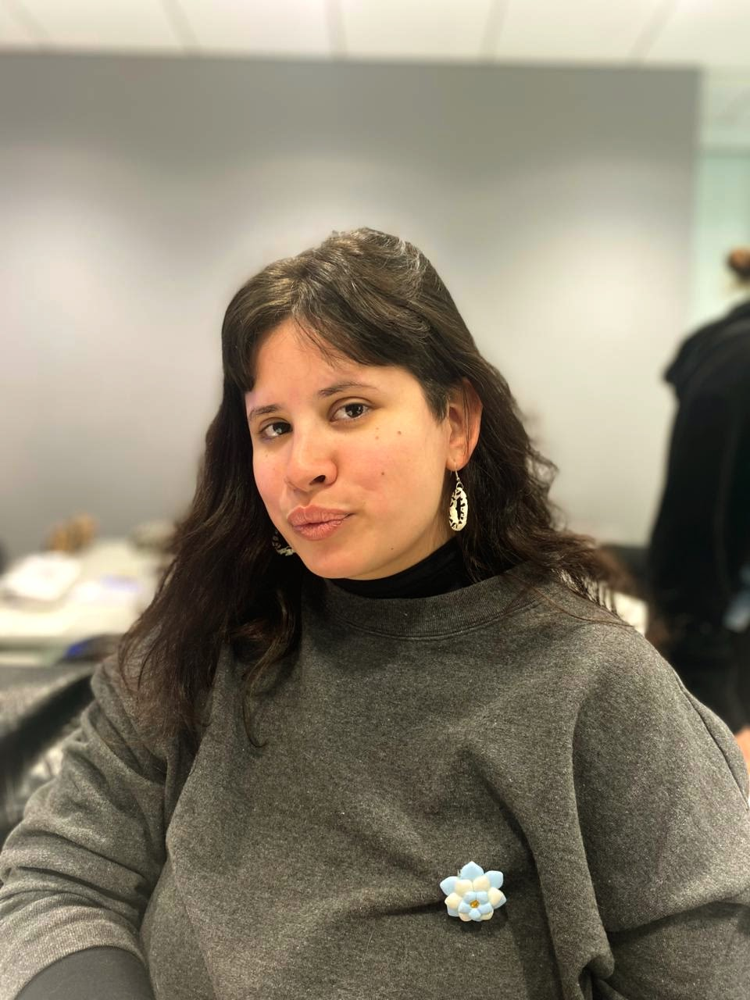

QA · Tech Enthusiast · Project Maker
quality, culture & everything in between.
QA con foco en calidad y experiencia del usuario. Entusiasta de product management y productora de un ciclo de cine. Me muevo bien entre lo técnico y lo humano, pienso en procesos, en audiencias y en cómo mejorar las dos cosas.
Sobre mí

QA con experiencia en proyectos enterprise, con foco en calidad, procesos y experiencia del usuario. Trabajé en RebelMouse testeando el sitio más grande de la empresa, Penske Truck Rental, haciendo QA de features nuevas, redesigns y validación prelaunch.
Fuera de lo tech, soy productora de Club Classics, un ciclo de cine independiente donde combino curaduría, gestión de artistas y producción técnica. Estudio gestión cultural porque creo que el contexto y las personas son parte del trabajo, en tech y en cualquier otro lado.
Proyectos
Cliente enterprise principal
Testing end-to-end del sitio más grande de la empresa, features nuevas, redesigns y QA prelaunch para un cliente enterprise con código propio integrado.
Cliente confidencial · 2025 — presente
Testing y planificación end-to-end de forma independiente para un cliente ecommerce. Soy responsable del proceso completo, desde definir qué testear hasta reportar resultados.
Ciclo de cine independiente
Productora de un ciclo de cine donde combino lo técnico con lo curatorial, desde la proyección hasta entender qué quiere la audiencia.
Herramientas
Uso actualmente
Aprendiendo
Intereses
Conocimientos
SELECT * FROM users WHERE email = 'test@test.com';
SELECT users.name, orders.product
FROM users
JOIN orders ON users.id = orders.user_id;
Contacto
Si querés hablar de trabajo, proyectos o simplemente conectar, escribime.